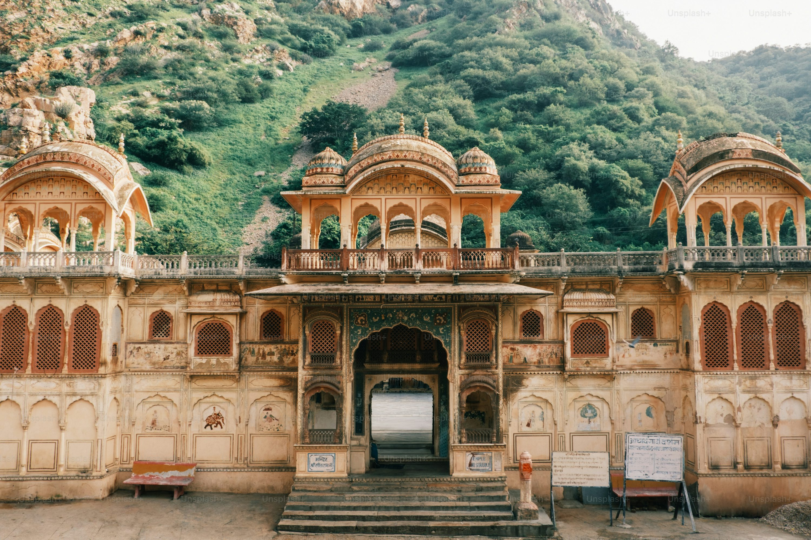
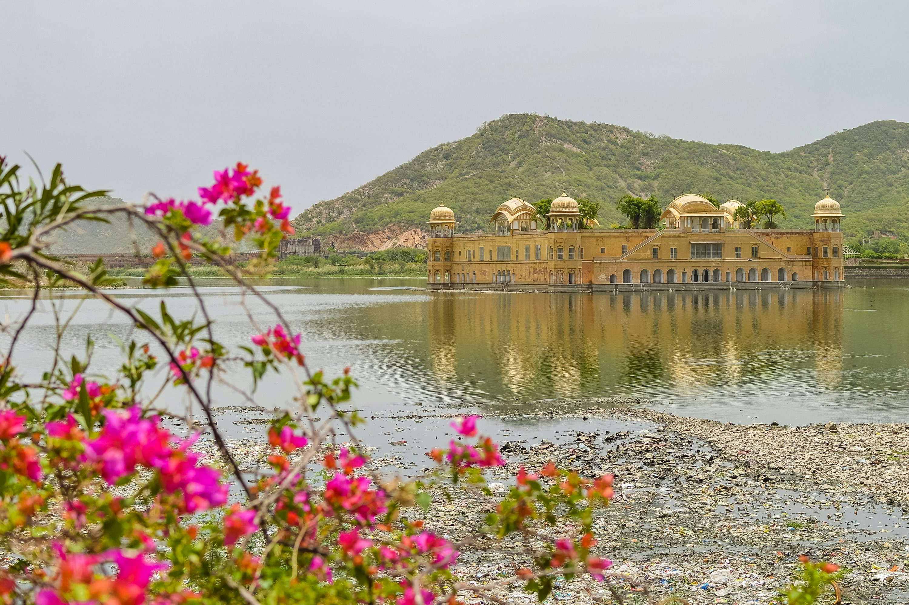
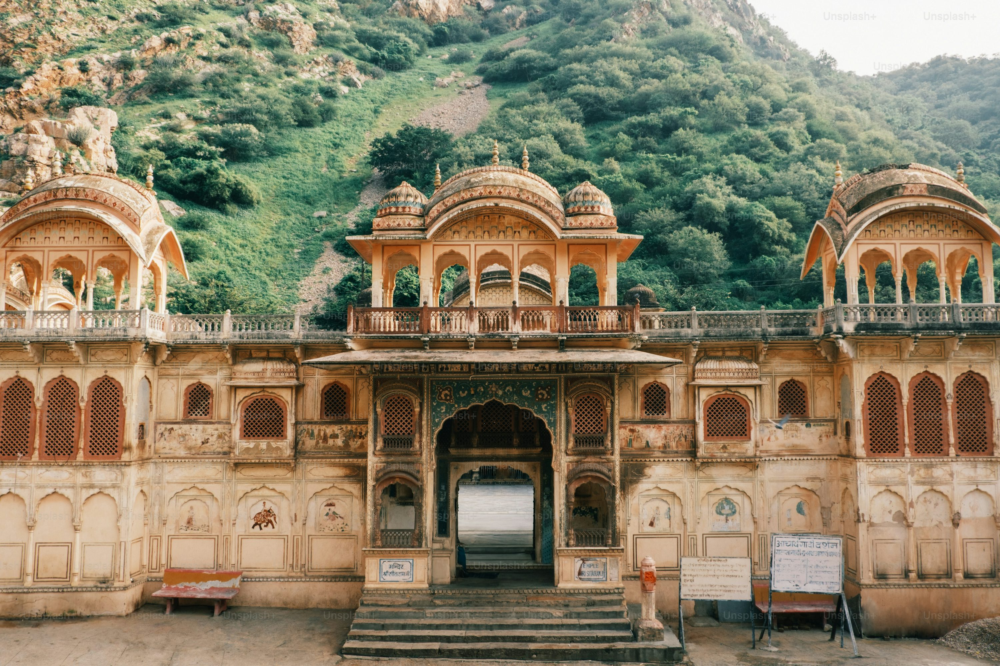
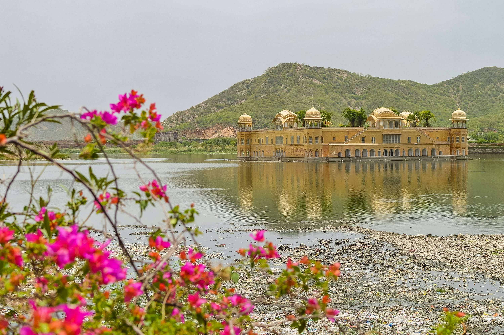

Sarhul Festival
Celebrate the vibrant Sarhul festival, marking the beginning of the new year for the tribal communities of Jharkhand with traditional music and dance.
All Details
Celebrate the vibrant Sarhul festival, marking the beginning of the new year for the tribal communities of Jharkhand with traditional music and dance.
All DetailsExperience the unique Karma Puja, a festival dedicated to nature and celebrated with folk songs and rituals across Jharkhand.
All Details
Explore Jharkhand’s culture, handicrafts, and cuisine at the annual tourism fair held in Ranchi.
All DetailsDhooska is a popular Jharkhand snack made from rice and chana dal, deep-fried until golden and fluffy. Best enjoyed hot with spicy potato curry or chutney.
Litti is a wholewheat flour dough ball stuffed with a spiced mixture of satui. Litti, along with chokha, is a complete meal that is popular in the Indian states of Bihar, and eastern Uttar Pradesh, and the Nepalese provinces of Madhesh and Lumbini. It is also a popular street food in small towns and cities. Over the years it has gained international recognition.
Chhilka Roti or chilka roti is a traditional bread of Jharkhand, India. It is prepared using rice flour and chana dal. It is served with chutney, vegetables and meat.
Discover the waterfalls of Ranchi, the forests of Netarhat, the wildlife of Betla National Park, and the spiritual sites like Deoghar. Jharkhand is a land of natural beauty and rich culture waiting to be explored.
Explore more
• Hundru Falls, Dassam Falls, and Jonha Falls – the majestic waterfalls near Ranchi.
• Betla National Park – home to tigers, elephants, and rich flora.
• Netarhat – the Queen of Chotanagpur, famous for its sunrise and sunset points.
• Deoghar – a major pilgrimage site with the famous Baba Baidyanath Temple.
• Parasnath Hill – a sacred Jain pilgrimage destination.
...and many more wonders await you in Jharkhand!

 


